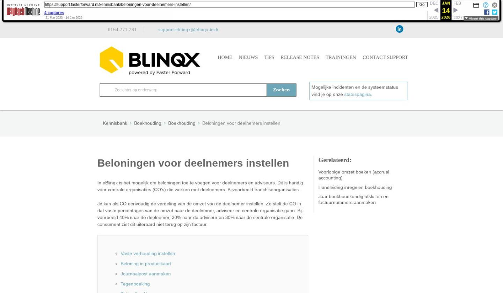

Beloningen voor deelnemers instellen

Tekstinhoud
Beloningen voor deelnemers instellen
In eBlinqx is het mogelijk om beloningen toe te voegen voor deelnemers en adviseurs. Dit is handig voor centrale organisaties (CO's) die werken met deelnemers. Bijvoorbeeld franchiseorganisaties.
Je kan als CO eenvoudig de verdeling van de omzet van de deelnemer instellen. Zo stelt de CO in dat vaste percentages van de omzet naar de deelnemer, adviseur en centrale organisatie gaan. Bijvoorbeeld 40% naar de deelnemer, 30% naar de adviseur en 30% naar de centrale organisatie. De consument ziet dit uiteraard niet terug op zijn factuur.
Vaste verhouding instellen
Beloning in productkaart
Journaalpost aanmaken
Tegenboeking
Spiegelboekingen
Vaste verhouding instellen
Je stelt hiervoor een vaste verhouding in tussen deelnemer en adviseur, bijvoorbeeld 20% voor de deelnemers en 10% voor de adviseur. Deze beloning stel je in via Productbeheer – zoeken op betreffende organisatie (bijvoorbeeld de CO) – betreffende product selecteren – tabblad Beloningen.
Beloning in productkaart
De deelnemer ziet de verhouding van de vergoeding terug in het klantdossier – betreffende product – rechts in de productkaart onder 'Beloningen', maar kan deze niet zelf aanpassen. Gebruikers met de juiste rechten, zoals iemand van de centrale organisatie, kunnen deze verhouding wel aanpassen.
Journaalpost aanmaken
Vervolgens kan een deelnemer een journalisering aanmaken via de workflow. Gebruikers die bijvoorbeeld werken met de financiële administratie kunnen ook journaliseringen aanmaken in het tabblad Boekingen.
Tegenboeking
Op het moment dat de factuur wordt aangemaakt en goedgekeurd, maakt eBlinqx een tegenboeking voor de voorlopige omzet op de grootboekrekening die daarvoor is ingesteld. Standaard is deze ingesteld op grootboekrekening '6000 – Nog te factureren'.
Spiegelboekingen
Het is daarnaast mogelijk om te werken met spiegelboekingen. Een deelnemer (van een centrale organisatie) kan in hun eigen administratie instellen op welke grootboekrekening er geboekt wordt.
Spiegelboekingen worden gebruikt voor het "gespiegeld" boeken van bedragen uit de administratie van de centrale organisatie in de administratie van de deelnemer.
Lees dit supportartikel om te weten hoe je als centrale organisatie spiegelboekingen instelt.
Laatste update: 15 oktober 2025
Was deze informatie nuttig?
Ja Nee